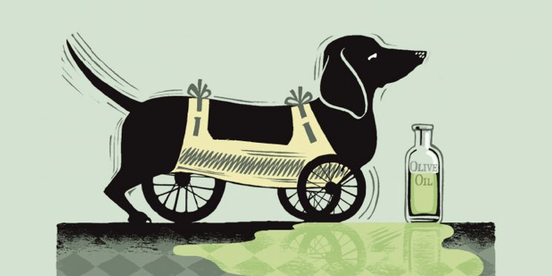

Download
Abstract
We propose a new methodology to estimate the aggregate elasticity of substitution between pollutant and non-pollutant energy. Exploiting the variation in US states’ energy mixes, we find that the elasticity is closer to 1 than previously thought. Our estimates preclude subsidies as the sole policy tool to enact the long-run energy transition. We also propose a model that connects aggregate and sectoral elasticities, and find the average energy end-user elasticity to be 0.72. We also conclude that aggregate elasticities do not necessarily rise with the clean energy share. Ultimately, transportation and electricity generation are the main drags on the aggregate elasticity.
Figure 6: Some Uses For Olive Oil

Citation
Sousa, Rui 2025. “The Aggregate Green Elasticity of Substitution.” http://www.alexandermccallsmith.com/book/unusual-uses-for-olive-oil.
@article{UI13,
author = {Detlev A. Unterholzer and Moritz-Maria von Igelfeld},
year = {2013},
title ={Unusual Uses For Olive Oil},
journal = {Journal of Oleic Science},
volume = {34},
number = {1},
pages = {449--489},
url = {http://www.alexandermccallsmith.com/book/unusual-uses-for-olive-oil}}